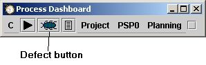
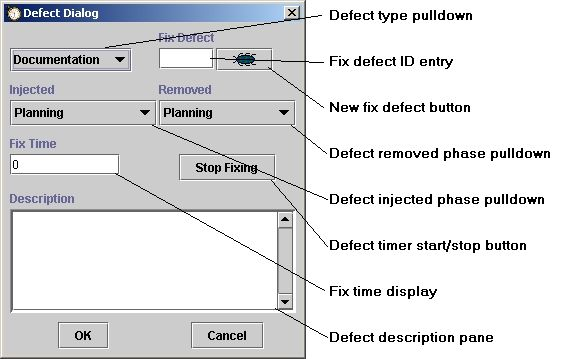

We all make mistakes. Dealing with those mistakes in a constructive way so that we can learn from them is a lot of what the PSP is all about.
Entering defects in the dashboard is as easy as choosing the defect button.
When the defect button is chosen, the defect dialog pops up so that you can enter information about the defect that you have discovered.
In this dialog box, you enter all the data necessary to describe the defect.
The defect type pulldown allows you to choose the type of defect. The choices are the same as those given in A Discipline for Software Engineering. At this time, there is no way to define a different defect categorization scheme.
The "Fix Defect" entry is where you can put the ID number of another defect if this is a "fix defect". A "fix defect" is a defect that was injected while fixing another defect. In order to determine the ID number of the other defect, you can pull up the defect editor by choosing "Defect Log" on the "C" menu. One of the columns of information about each defect will show the ID number. For more information about using the Defect Log see the Using the defect log editor help topic.
The "new fix defect" button to the right of the ID entry provides another way to enter a "fix defect". To enter a "fix defect" for another defect previously recorded, find the original defect in the defect editor and click the edit button. The defect dialog will pop up to allow changes to the defect data. If you click the defect button at this point, another defect dialog will be displayed with the ID number of the previous defect already entered in the ID entry.
The defect injected and defect removed pulldowns allow selection of the phases in which the defect was injected and removed, respectively. The dashboard will set both of these to what it thinks are appropriate choices given the current development phase, but that default choice can be overridden easily.
The defect dialog has its own built in timer independent of the main dashboard timer. By default, when the dialog first appears, it starts timing the fix of the defect. The fix time display will show the time passing. The intent of this behavior is that most people will discover a defect, push the defect button on the dashboard and immediately start fixing the defect. In this scenario, the dialog will immediately start timing the fix. This behavior can be changed via an entry in the configuration file. Adding the following line to the configuration file will cause the dashboard to appear without starting the defect timer.
defectDialog.autostart=false
The timer start/stop button allows starting and stopping of the defect timer. If you stop fixing the given defect but are not finished with the fix, you can press this button to stop the timer.
In any case, you can stop the timer and enter a specific time in the fix time display box.
The defect description pane is where you record a description of the defect.
If you have the need to fix more than one defect at one time, you can do so by simply pushing the defect button again to sisplay another defect dialog. When this happens, the timer on the first dialog will stop (if it was running) and the new defect dialog's timer will start recording time for the new defect. This new defect will become the "current" defect. When this new defect dialog is dismissed, the most previously opened defect dialog will become the current defect. It will pop to the front and its timer will start up again (if it had been running previously).
In this way you can keep an arbitrary number of defect dialogs open at once. If this is to be done, we recommend that you enter a description of the defect into the dialog box as soon as it is opened so that when it comes back to the front as the currently active defect, it will be clear what you were working on.